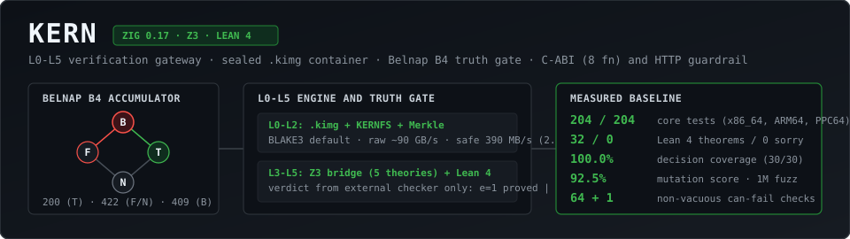
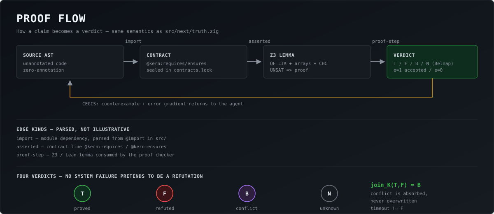

L0-L5 verification gateway / sealed .kimg container
Belnap B4 truth gate / polyglot @kern: contracts / MCP server
A claim is admitted only with machine evidence.
Source tag v2.7.1 is signed (Ed25519). Binaries are attached by the Release workflow when a tag is pushed; the link above always points at the latest published release, so it never promises a file that does not exist.
Verify it yourself with the public key shipped in the repository:
make verify-attestation (key docs/keys/kern-owner.pub,
id sha256:6da3e85e…1360f). No private key and no home-directory keys are involved;
a missing kern.intoto.sig is treated as a failure.


T ⊔ F = B instead of being silently overwritten.
NNode — the single gateway (an L0–L5 firewall): code either reaches production with e = 1 or is blocked with e = 0.
█
Transcript of a real make run-example run.
Command lines, verdict tokens (SAT/UNSAT, e=0/e=1,
(F)/(T)) and numbers are printed verbatim; the surrounding prose is shown in
English for readability — the tool itself prints Russian verdict words, and the can-fail gates
depend on those exact strings.
| Task | Language | deepseek | glm | mimo | minimax | nemotron |
|---|---|---|---|---|---|---|
| integer average with a 500 cap | Python | T | T | T | no file | T |
i32 sum, ensures result >= a | Zig | F → F | F → F | F → F | F → F | F → timeout |
| integer division, unguarded | C | F → T | F → T | N (loop, outside subset) | no file | not measured |
i32 sum, ensures result >= a | Rust | F → T | F → T | T | F → F | not measured |
--diff-equiv, no contracts)The same five models were asked to optimize clamp_int from boltons.
| Model | Verdict |
|---|---|
| deepseek | DIVERGED |
| glm | EQUIVALENT |
| mimo | DIVERGED |
| nemotron | DIVERGED |
| minimax | no file |
Honest nuance: rewriting max(lo, min(x, hi)) as two ifs is
equivalent only while lo <= hi. --diff-equiv compares without any
contract, so it reports the difference in the lo > hi region with the witness
x = 0, lo = 0, hi = -1: was 0, became -1.
Live guide to all 10 capabilities (EN / RU, generated by make demo-all): EN · RU
| Case | Language | KERN witness | Real toolchain | Result |
|---|---|---|---|---|
py_abs_bad.py | Python | x = -1 | python3 | AssertionError |
c_unguarded.c | C | b = 0 | gcc -fsanitize=undefined | division by zero |
rust_overflow.rs | Rust | a = 2147483647, b = 1 | rustc -C overflow-checks=on | panic: overflow |
zig_div.zig | Zig | b = 0 | zig run | panic: division by zero |
model add32 | Zig | a = 2147483647, b = 1 | zig run | panic: integer overflow |
Ground truth 5/5 · mutation kill 5/5. One mutation survives on purpose:
if x < lo → if x <= lo is an equivalent mutant (both branches
return lo when x == lo) - a prover answering F there would be wrong.
Round 1 blind: 4 proved, 7 refuted, 1 honest N · after KERN’s counterexample
4 of 7 refuted tasks repaired. The three that stayed broken are the same Zig
overflow task: every model re-sent return a + b; while the witness
a = 2147483647, b = 1 → 2147483648 was in the prompt — whereas the Rust
twin of the same task was fixed with a.saturating_add(b).
And when the contract is impossible, models rewrite the specification instead of
saying so: both models tested narrowed @kern:requires (leaving
@kern:ensures untouched) — the contract lock catches exactly that
(contracts-lock-check, rc=2).
Raw artefacts: evidence/leaderboard/, evidence/live_eval/; details in LIVE_MODEL_EVAL.md.
Every number above is produced by a command you can run yourself — see docs/METRICS.en.md and docs/evidence/. Exact per-commit metrics (avalanche, collision chain, χ²) are charted on the benchmark page.
Every row is produced by a run (make audits, bug_hunter.py --trophies),
never written by hand. PROVEN means Z3 proved it and our Zig proof checker
re-checked the certificate (trusted: 0 | holes: 0); REFUTED ships the exact
Z3 counterexample. Full table and honest limits:
README
· audits/EVIDENCE.md.
| Project (file) | Claim | Verdict | Counterexample |
|---|---|---|---|
ziglang/zig lib/std/mem.zigalignBackward |
addr & ~(align-1) == addr - addr % align |
PROVEN · QF_BV 32 | — |
ziglang/zig mem.zigalignForward |
addr + (align-1) fits in u32 |
REFUTED | addr=4294967295, align=2 → 4294967296 |
tigerbeetle src/stdx/stdx.zigdiv_ceil |
(n + d - 1) / d exact, no overflow |
PROVEN · 98 steps, trusted: 0 | — |
musl libc src/stdlib/abs.cabs |
result >= 0 for x > INT32_MIN |
PROVEN · 51 steps, trusted: 0 | — |
ghostty src/renderer/size.ziggridColumns |
columns never 0 | PROVEN | — |
andrewrk/gpa gpda.zigisAligned |
addr & ~(align-1) == addr ⟺ addr % align == 0 |
PROVEN · all 2³² addresses | — |
zlib zutil.czcalloc |
items * size fits in u32 |
REFUTED | items=#x8e0ff0f1, size=#x5ffeffef → #xffffffff |
| JDK (Bloch, 2006) binarySearch |
(low + high) / 2 in i32 |
REFUTED · QF_BV only | low=#x804, high=#x7ffff7fc → #xc0000000 (negative) |
ziglang/zig lib/std/math/64 files |
zero-annotation --xray (C-like path) |
checked 80 / 219 | 0 findings (was 0 checked) |
| Python 3.12 stdlib 8 modules |
zero-annotation --xray field scan |
checked 211 / 413 | 0 false positives |
github/cmark-gfm src/autolink.c · extensions/table.c · src/inlines.c4 historical CVEs |
retro-validation: caught before the fix, silent after | 4 / 4 caught · certificate trusted: 0 | 2cb4a20 · 4682993 · ac80f7b · 198669d |
--full-scan <path> runs the honest subset in one pass: zero-annotation
--xray over all 7 languages, then, for findings, contract inference
(--infer-requires) and a reproducing test (--gen-tests). Theories that need a
contract are reported as applicable, never as “verified”.
Honest limits. The SMT model is ours — a counterexample must still be reproduced against the
project's own build before it can be called their bug. Bloch's bug is invisible in the Int
theory (needs @kern:bitvec32 / QF_BV). SKIP rows are kept on purpose:
a verifier that never refuses is not verifying.
Paste a function (Python, Zig, C, Rust, Go, TS/JS) or a GitHub file URL. The page extracts
if / else if branches on one variable, computes McCabe CC, and asks the
real KERN core compiled to WebAssembly (kernc.wasm, Fourier–Motzkin LIA)
whether two branches can be simultaneously true. Everything runs locally — no server calls.
—
Honest scope: only branches on a single variable with integer comparisons are
decided; anything else is reported as “outside the fragment”, never as “proven”. The WASM call is
the same solver the CLI uses (2 constraints: a·x + b·y + c ≤ 0).
false ⟹ anything): a contradictory requires would make any broken body "provable" → KERN answers [VACUOUS] precondition is unsatisfiable (empty domain) and keeps the gate closed.@kern:ensures is the cheapest cheat → every contract is fingerprinted in docs/contracts.lock.json, and any removal or edit is a hard error (rc = 2).∃x: f_old(x) ≠ f_new(x) over all of ℤ and prints the exact input where the two versions disagree.--emit-pytest turns it into a real regression test that fails on the current code, while --sarif / --github-annotations put it on the exact line inside a pull request.Eight tools over stdio for any MCP client, with 17 live self-checks
(make mcp-selftest):
kern_verify_smt · kern_prove_with_checker · kern_verify_multi_belnap ·
kern_verify_python · kern_check_equivalence · kern_xray_code ·
kern_verify_action · kern_rlvr_reward.
In CI, the reusable Action verifies the downloaded binary against
SHA256SUMS before running it, and can emit a SARIF 2.1.0 report for GitHub Code Scanning:
uses: newmathphys/kern@v2.7.1
Short entries from docs/METRICS.md; the full registry is defect registry #1–#373. Each entry is a case where a measurement or a harness was wrong — not the code it was checking.
#110 — the mutation score was measured without a solver.
Symptom: the score "dropped" to 77.5 % after the mutator was pointed at 14 files instead of 6.
Found by measuring, not guessing: without z3 in PATH the suite reports 263 passed; 8 skipped — and a skipped test cannot kill a mutant. One of those 8 tests had been written specifically to kill the mutant that "survived".
Fix: the mutator now requires a solver (--require-solver); the score at that time was 95.0 % (38/40). After the corpus grew to 21 files the full sweep reports 1345 / 1345.
#107 — 64 % of the mutants came from a single file.
Symptom: "mutation coverage over 14 files" — but proof_check.zig holds 266 of the 420 sites, so a uniform sample put ~25 mutants in one file and 0–1 in the others.
Fix: stratified sampling with a guaranteed minimum per file, a fixed recorded seed, and the site distribution published in the defect entry.
#116 — the harness rollback silently discarded an edit made during a run.
Symptom: a README edit vanished, and the file stayed syntactically valid, so nothing looked broken. Found by comparing content, not exit codes: the can-fail harness restores patched files from a byte snapshot taken at the start of each case — and for files the case itself patched, a third-party edit in between was overwritten without a word. Fix: the harness records the hash of what it wrote and refuses to restore when the file changed afterwards; per-case state is reset. Verified by a targeted 3/3 test.
What is measured, what is written but not measured, what is not implemented and what is not verified for real is listed in CAPABILITY_STATUS.en.md, together with the defects this project found in itself (#1–#373). A check that cannot go red is treated as a defect here, not as coverage.
Same idea as third-party repository catalogs, but the card is built from
measured facts (native/formal files included) and the rubric weights are printed.
This is a checklist, not a proof: the proven claims are trusted: 0 in the
proof checker and the Lean 4 theorems.
…
…
…
…
…
Score any other repository from the CLI (full scan: 8 languages,
X-ray, MCP surface, mutation/proof metrics):
python3 tools/trust_scorecard.py --repo owner/repo --json out.json — repositories
without Lean 4 proofs or an MCP manifest are graded on the base profile (max 88, Grade A),
and the card prints how to reach A+. A live browser scan (GitHub tree + raw files +
kernc.wasm) is available in the next section; it is capped at 65, because mutation,
can-fail and the Z3 theories stay CLI-only.
Reads the tree via api.github.com/…/git/trees/HEAD?recursive=1 and up to
15 code + 10 .lean files via raw.githubusercontent.com (both CORS-open),
and calls the real kernc.wasm (kern_wasm_lia_unsat2) in your browser.
Honest scope: X-Ray here is heuristic (regex + LIA on numeric guards); mutation
(1345 sites), can-fail (168 goals), QF_S/IEEE-754 and the Ed25519 signature check are CLI-only —
therefore the browser score caps at 65.
enter owner/repo and press “Live audit repo”
Select a row to run a live audit in this browser. The full audit — SMT solving,
mutation testing, the can-fail harness and a signed attestation — is reproduced for
newmathphys/kern. The other rows are entry points for the composition scan.
| repo | status | what is known |
|---|---|---|
| newmathphys/kern | 100/100 · A+ | full CLI audit: 147 Lean theorems (0 sorry), 1427/1427 mutants, 168/168 can-fail, 92 .zig + 8 .lean, 8/8 MCP |
| QuixBugs (40 tasks) | 40/40 diff | 6/40 formal SMT (Stage 1, trusted: 0) · 40/40 live differential (24 value + 8 crash + 1 hang; 9 need no oracle, 24 use the dataset reference) · 0 EXPLORED. The dataset's own tests (31/31) are dataset wiring, not a KERN metric (#231, #239) |
| modelcontextprotocol/servers | composition | MCP surface: tools/list, descriptions, annotations |
| ziglang/zig | composition | .zig composition (Blind-Spot Check), Lean absent |
| leanprover/lean4 | composition | .lean theorem/sorry count (first 10 files) |
| astral-sh/ruff | composition | Rust + Python: CC, anti-cheat, crash paths |
| github/cmark-gfm | 78/100 · B | C11: CC, crash paths — field-audited (59 → 0 false crash paths) |
| tigerbeetle/tigerbeetle | 84/100 · B | Zig: field-audited, 586/2380 functions, 0 crash paths after #183 |
| BurntSushi/ripgrep | 73/100 · B | Rust: 36/1354 functions (was 0/1292), 60 → 0 false crash paths |
Field audit of 14 real repositories
(Zig, C, Rust, TypeScript, Go, Python, Lean 4) — scorecard and X-Ray numbers
before and after the fixes:
docs/FIELD_AUDIT_REPORT.md.
Browser score is capped at X/65: it reads the tree and raw files only;
the remaining 35 points need Z3 X-Ray, mutation testing and a signed attestation
(python3 tools/trust_scorecard.py --repo owner/repo).
No scans in this browser yet.
Runs the real Zig core compiled to WebAssembly. 0 server calls; the module is 85 KB and has no OS syscalls.
N=0 · T=1 · F=2 · B=3 (bit0=p, bit1=n)
Valid 64-bit code → e = 1
x ≤ 5 ∧ x ≥ 10 → UNSAT
Every control below is driven by data shipped with this page: the
flow map is a static SVG, the lens and the filters read
showcase-graph.json, which is regenerated from @import,
test " and @kern: in src/ by
make showcase. Nothing here is a mock-up: what the page cannot run
in a browser is marked CLI only instead of being simulated.
| Control | What it does | Data source | Status |
|---|---|---|---|
| SVG flow | Directed map AST → contract → Z3 lemma → verdict; edges are labelled import, asserted, proof-step; the CEGIS arrow returns a counterexample with its error gradient. | docs/kern-proof-flow.svg | real, static |
| 🔍 Lens | Isolates the active module plus its direct (1) and second-order (2) import neighbours. Click any node to move the lens. | docs/showcase-graph.json ← @import in src/ | real, interactive |
| [ + ] AND | Left click on a chip: keep only modules that carry the claim. | recomputed from source | real |
| [ ~ ] OR | Shift + click: at least one of the OR-claims must hold. | same | real |
| [ - ] NOT | Right click: hard exclusion. | same | real |
| [ = ] EQUIV | Symbolic equivalence of two revisions through Z3 --diff-equiv. The recorded run below is real; the command is printed so you can reproduce it. | tools/kern_contracts.py | CLI only — the browser has no solver |
python3 tools/kern_contracts.py --diff-equiv examples/refactor_before.py examples/refactor_after.py
[DIVERGED] charge: РЕФАКТОРИНГ ИЗМЕНИЛ ПОВЕДЕНИЕ
[КОНТРПРИМЕР] amount = 1, res_old = 0, res_new = 2, balance = 1
(противоположная пара, examples/refactor_before.py vs itself)
[EQUIVALENT?] charge: solver proved equivalence, proof checker rejected it (premises_unbound)
→ the same revision is never accused of divergence (#243)
The CLI prints in Russian; verbatim reading: [DIVERGED] charge: the refactoring changed behaviour · [COUNTEREXAMPLE] amount = 1, res_old = 0, res_new = 2, balance = 1. No translation of the numbers, no re-run — this is the captured output of the command above.
loading…
loading…
| module | LOC | pub fn | tests | @kern: | claims |
|---|---|---|---|---|---|
| — | |||||